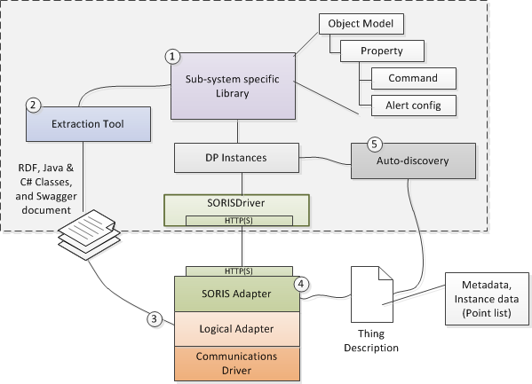

SORIS
For procedures or workflows, see the step-by-step section. For adapter deployment or configuration, see the SORIS Adapter SDK Developer API Document, available when you installed your SDK.
SORIS (Southbound Open RESTful Integration Service) represents an architecture style for designing networked applications. It relies on a stateless, client-server, cacheable communications protocol—in this case, HTTP(S). The SORIS architecture provides interoperability between computer systems on the internet, while the SORIS adapter allows vendors to integrate their proprietary subsystems with Desigo CC.
The following graphic shows the five-step workflow required for integrating a SORIS adapter with Desigo CC. The dashed-line box represents Desigo CC, and all the components inside are provided by the SORISDriver extension module. The SORIS adapter represents the framework where you build your adapter. You will also need to develop the logical adapter, the object model, and the communications driver for the subsystem or device you are integrating. The descriptions that follow provide a more detailed explanation of the process.

- An Object Model in Desigo CC is basically a named object with a list of properties. For example, a Light Object might have properties like color, power, brightness, and name. You create one or more Object Models in Desigo CC that correspond to the data structures of the subsystem objects you want to integrate. There might even be some domain libraries—for example, Fire or Security—that already contain Object Models matching the objects you are integrating, and you can re-use those.
- An extraction tool exports the Object Models into several output types. You can select the properties from each Object Model you want to export. The tool exports information as RDF classes. Additionally, it exports specific programming language abstract types (C# and Java) corresponding to the Object Model. To enable frameworks that can generate RESTful services, the extraction tool also produces a Swagger document. This document describes the Object Model as data-definition aspects, along with endpoints representing the property (read and update).
- The generated object-oriented classes from step 2 are ready to use in programming the adapter. In this step, you create your logical adapter using the SDK for either C# or Java. Your logical adapter needs to implement 3 methods in the framework. The first one is Initialize(), and this is where you enumerate all the objects in your subsystem and add them to a container. The next two methods are Read() and Write(). This is where you provide the code to read and write each property, possibly doing some data type conversions in the process. You will also provide a communication driver to the system you are integrating. That system needs to be able to provide a list of all the instances, and it needs the ability to read and write properties.
- The HTTP(S) endpoint of the SORIS adapter provides the description of the instances (Things) hosted in the adapter. These Thing Descriptions are RDF documents serialized in JSON.
- The SORIS adapter contains the Thing Descriptions, which contain the Object Models. The SORIS driver communicates with the SORIS adapter to get the Thing Descriptions, and then an auto-discovery component in Desigo CC makes the instances of the Object Model(s) and addresses the properties with resource URLs. Then, the SORIS driver starts to read and update the resources.